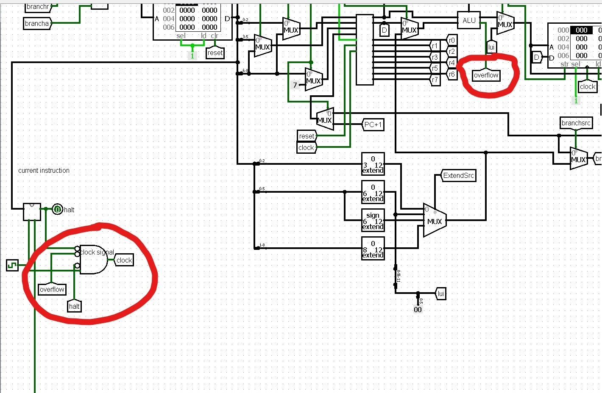
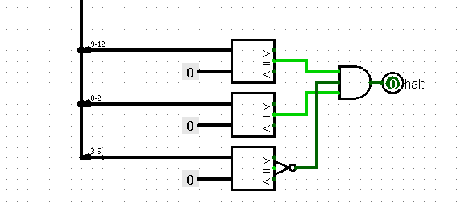

Dit verslag werd opgesteld door:
De oplossing bestaat uit het volgende bestanden:
Een exception doet zich voor als er overflow optreedt. Dit kunnen we snel detecteren door te kijken naar onze ALU.
Deze geeft weer wanneer er overflow optreedt. Overflow zorgt ervoor dat de klok stopt met lopen en we hangen deze dus
via een AND-poort aan de klok en notten die. Vanaf dat er zich overflow voordoet zal de klok dus continu op false staan.
Voor de invalid instructions hebben we een controle gemaakt in onze controller. In dit project zijn er niet veel invalid
instructions en de Halt in de controller zal dus enkel true zijn als de derde tot vijfde bit niet nul zijn als de eerste
vier en de laatste drie bits nul zijn. Deze wordt ook met de klok verbonden en wanneer dit true is zal de klok dus niet meer
werken.
Hieronder is onze implementatie te zien.
Overflow:

Halt:

Voor de implementaties van de Assembly programma's hebben we gekozen voor Fibonacci en Het kleinste element uit een rij halen.
Ik zal lijn voor lijn onze geschreven code uitleggen.
Om te beginnen worden er belangrijke waarden geladen in enkele registers. In onze datapath hebben we 8 registers, waarvan er 7 gebruikt kunnen worden. (Het nulde register moet altijd nul blijven. Een load immediate bestaat niet in deze assembler dus moeten we dit coderen als een zero van een register gecombineerd met een OR immediate. We laden de eerste twee waarden van de Fibonacci reeks (1 en 1) in register 1 en register 2. Voor de rest laden we nog een 1 in register 4. Dit geeft weer hoeveel we telkens in het geheugen moeten opschuiven om op te kunnen slaan. Als laatste slaan we dan ook nog 16 op in register 6. Dit is de stack-pointer. Hij geeft weer waar in het geheugen we kunnen schrijven. Dit zorgt ervoor dat de instructies zelf die ook in het geheugen zijn opgeslagen niet overschreven worden. Daarna beginnen we met onze loop die telkens een getal zal opslaan in het geheugen en een nieuw getal zal berekenen. (De loop begint op lijn 8) Als eerste gaan we de waarde van het getal in register 1 opslaan op de locatie die de stack-pointer aanduidt met een offset van 0. Dan berekenen we al meteen het nieuwe geheugenadres waar we kunnen schrijven door register 6 op te tellen met 1. Daarna berekenen we het nieuwe Fibonaccigetal door register 1 en 2 op te tellen en tijdelijk op te slaan in register 3. Daarna schuiven we alles op. De waarde van register 2 komt in register 1 terecht en de waarde uit register 3, het net berekende getal, komt in register twee. Hierdoor is het mogelijk alles weer nog eens te doen (je kan het blijven doen) en je springt dus terug naar het begin van de loop op regel 8.
Ook bij dit programma gaan we eerst een paar waarden in registers laden. We gebruiken weer register 6 als stackpointer en laten
die naar de plaats in het geheugen wijzen waarin de array staat. En ook hier laden we een 1 op om de kunnen lopen door
het geheugen (hier: lopen door de array). 1 wordt in register 4 geladen. Daarna wordt alles in gereedheid gebracht.
Eerst wordt het eerste getal uit de array in register 1 geladen, dit is immers tot nu toe het kleinste getal dat we
zijn tegengekomen (en ook het enige). Het eerste getal van de array is terug te vinden op de plaats waar de stack-pointer
(register 6) naar wijst met offset 0. Daarna gaan we 1 plaats verder in de array. Nu beginnen we met vergelijken. We
laden dus het tweede getal in register 2. Dan kijken we of dit nul is of niet. Indien dit het geval is jumpen we naar het einde
en is het programma afgelopen. In het andere geval slaat het deze jump over en wordt register 1 met register 2 vergeleken.
Indien register 2 kleiner is wordt er een 1 in register 5 gezet, anders een 0. Dan wordt er gekeken of register twee
kleiner was met een branch not zero.
Indien register 2 kleiner is springt het programma 3 lijnen verder. Nu wordt er een move
gedaan van register 2 naar register 1 via een add commando. Dit is nu het kleinste getal dat we tot nu toe zijn tegengekomen.
Nu laden we het volgende element van de array weer in register 2 en verplaatsen de stack-pointer weer. Nu springen we terug
naar het begin van de loop op regel 9.
Indien register twee niet kleiner is wordt het volgende element in register twee geladen en wordt de stack-pointer verplaatst.
Daarna wordt er terug naar het begin van de loop gesprongen op regel 9.